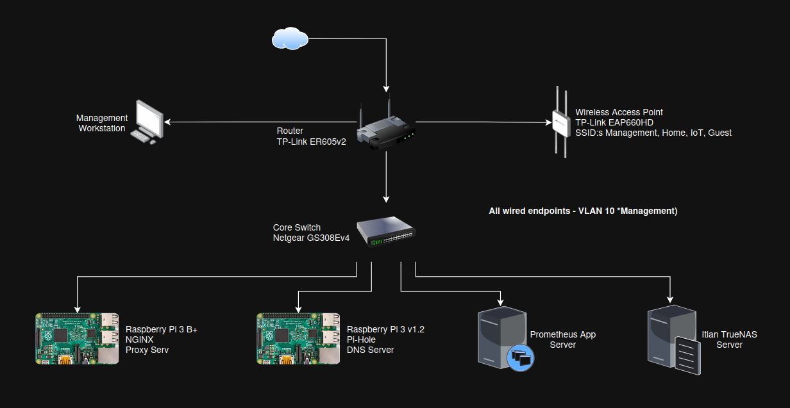
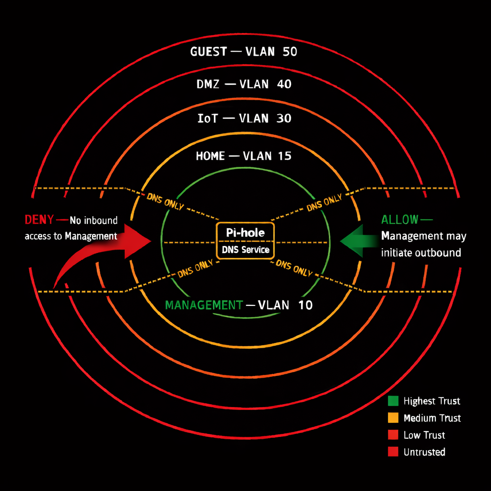

Home Infrastructure Systems Architecture
Trust boundary design, service isolation, and recovery-path engineering across network, compute, and storage layers.
- Wanted to stream movies from a hard drive to any device at home — that was the whole idea.
- Automating the media stack meant software phoning out to the internet, which meant actually thinking about what was exposed.
- One firewall question led to VLANs, which led to a full network redesign I did not plan on doing.
- Added a server, started experimenting with virtualization and Docker — at some point it stopped being about movies.
Build a platform that could host services and isolate risk without making the network a pain to manage or recover from. The design priority is clear trust boundaries and a preserved recovery path — not maximum features.
One router, one managed switch, a small set of physical hosts. Complexity is a risk surface — every extra trunk link is another place a misconfiguration can lock you out. The architecture is a direct response to learning that the hard way.

- TP-Link ER605v2
- Terminates all 5 VLANs
- Enforces all inter-VLAN firewall rules
- Single routing and policy control point
- Netgear GS308E v4
- Single managed switch
- Carries all VLANs to wired endpoints
- 100 ft Cat7 trunk to router
- TP-Link EAP660 HD
- SSID-to-VLAN mapping
- Serves Management, Home, IoT, Guest SSIDs
- Wired uplink to core switch
- TrueNAS — primary workload host
- Raspberry Pi 3 — Pi-hole DNS
- Raspberry Pi 3 B+ — Nginx Proxy Manager
- "Prometheus" node — reserved, future use
Keeping L3 policy at the router and L2 behavior at the switch creates a clear fault boundary: routing and firewalling problems are router problems; connectivity problems are switch problems. Mixing these responsibilities makes failures harder to isolate.
VLANs enforce trust boundaries, not just network organization. Cross-VLAN access is explicit and allowlisted. Nothing is implicitly reachable from another zone.
| VLAN | Name | Purpose | Trust Level |
|---|---|---|---|
| 10 | Management | Infrastructure devices, core services, admin plane | Highest |
| 15 | Home | Personal devices — semi-trusted, no management access | Medium |
| 30 | IoT | Untrusted devices — constrained by default | Low |
| 40 | DMZ | Isolated experiments and lab workloads — blast-radius containment | Untrusted |
| 50 | Guest | Guest Wi-Fi — internet only, no internal access | Untrusted |
Non-negotiable rule: No non-management zone can initiate access into VLAN 10. Management may initiate access outward for administrative purposes. The reverse is never permitted.

| Source Zone | Destination | Policy | Notes |
|---|---|---|---|
| Management | All zones | ALLOW | Administrative control plane only |
| Home | Management | DENY | Personal devices have no management access |
| Home | TrueNAS / Plex | LIMITED | Media access only — explicit allowlist entry |
| IoT | Management | DENY | Untrusted devices blocked from all internal access |
| IoT | Plex / Media | DENY | Media access restricted to Home zone only |
| Guest | Internal zones | DENY | Internet egress only |
| DMZ | Internal zones | DENY | No lateral access — full blast-radius containment |
| All zones | Pi-hole (DNS) | DNS ONLY | DNS explicitly allowlisted; all other cross-VLAN traffic to VLAN 10 denied |
Services are distributed across independent physical devices. This prevents a single workload event from collapsing all infrastructure functions — a lesson learned by observing how collocated services create cascading dependencies.
- Plex media server
- Automated arr stack (Sonarr, Radarr, Prowlarr)
- qBittorrent + Gluetun (PIA VPN tunnel)
- Tailscale overlay node (remote access)
- Dedicated Raspberry Pi 3 v1.2
- Resides on VLAN 10 (Management)
- Serves all zones via explicit firewall rules
- Kept separate from heavy workloads intentionally
- Raspberry Pi 3 B+
- Reverse proxy for internal services
- Decouples service URLs from device IPs
- Staged for potential future TLS termination
- Reserved for AI/ML or lab workloads
- Zone placement pending (DMZ vs Management)
- IPMI management port already provisioned
- 10G switch ports reserved
Pi-hole is kept on a dedicated low-power device because DNS is infrastructure-critical — if it fails, all zones lose internet resolution with no automatic fallback. Keeping it independent means a TrueNAS restart or storage event doesn't take DNS down with it. This is an intentional fail-closed design: there is no silent bypass to a public resolver.
Both the router and switch have a dedicated management-only port that is never touched during changes. This is the same discipline applied at both devices — the recovery path exists regardless of which one you're working on.
TP-Link ER605v2 — Router
Netgear GS308E v4 — Core Switch
Context: The original design used multiple managed switches with split responsibilities. Each additional switch introduced more trunk links, more VLAN tagging decision points, and more places where a single misconfiguration could eliminate the management path entirely.
Decision: Collapse to a single core switch. One trunk to the router. Minimal tagging surfaces. All wired connectivity through one documented device.
- Fewer devices — fewer failure domains to manage simultaneously
- Fewer trunks — fewer places a VLAN misconfiguration can cause a full lockout
- Reduced configuration drift — one switch config to maintain, not two or three
- Clear fault isolation — if switching is broken, there is one place to look
Tradeoff accepted: The single switch is now a single point of failure for all wired connectivity. A spare switch is staged for emergency flat-network recovery, and the router retains a fallback untagged management port.
These failures weren't random. Each one identified a place where the architecture needed a hard guardrail. The permanent changes they produced are what make the current design defensible.
The single switch was the right call for this environment, but at larger scale I'd add a second one — the redundancy is worth the added complexity when other people are depending on the network staying up. The segmentation model and the single L3 policy point would stay the same; that part scales fine.
The first thing I'd add in a real work environment is monitoring and alerting. Right now I find out something broke when I notice it. That's fine at home, not fine anywhere else. Beyond that, the change discipline I follow in my head — change one thing at a time, verify before moving on — would need to become actual documentation and automated checks. You can't rely on everyone just knowing the rules.
These are committed next steps, not aspirational items.
Export and store router, switch, and AP configs after every baseline change. Currently, recovery from a failed device requires a rebuild from memory — slower and error-prone. Versioned config backups reduce recovery time and eliminate configuration drift after hardware replacement.
All three incidents above could have been detected faster with a structured post-change verification pass. The checklist will cover: management VLAN reachability, DNS resolution from each zone, inter-VLAN deny rules, and wireless SSID-to-VLAN mapping. Firmware updates are included as change events requiring the full checklist.
The Tailscale overlay node currently runs on TrueNAS. A TrueNAS restart or storage event removes remote access entirely. Moving the overlay node to a lightweight independent host — a dedicated Pi or the Nginx device — creates a separate failure domain for remote access and removes the hard dependency on the primary storage host.